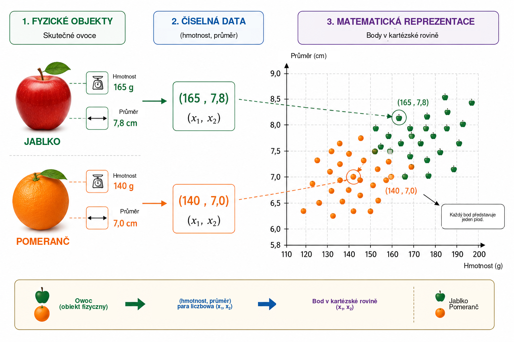
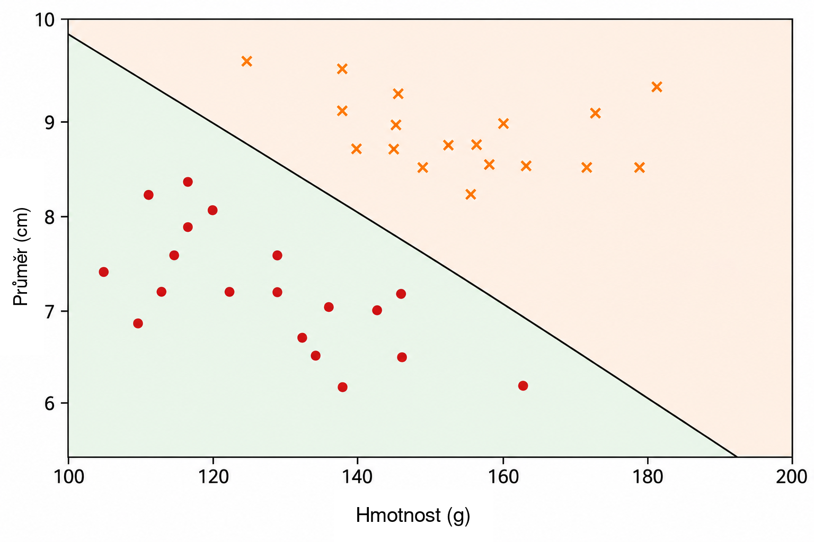
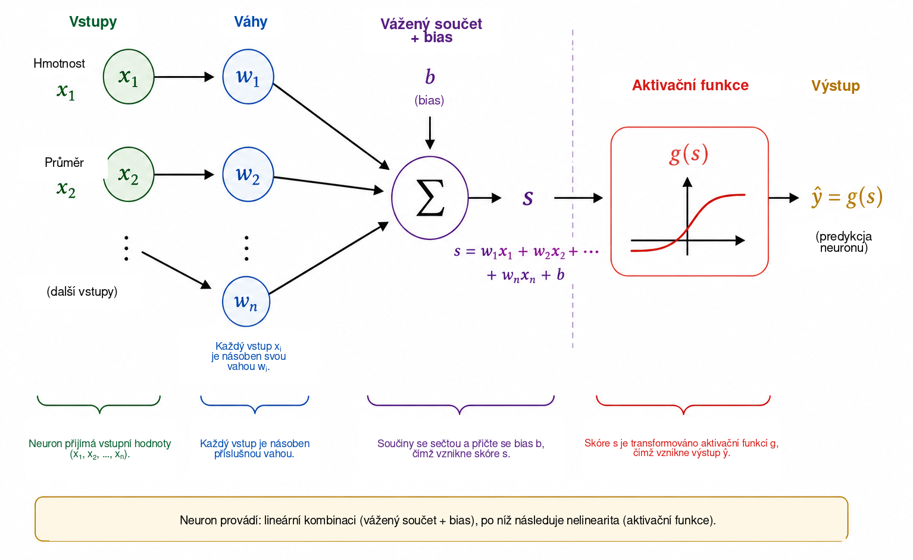
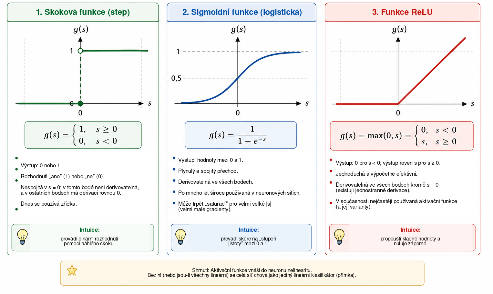
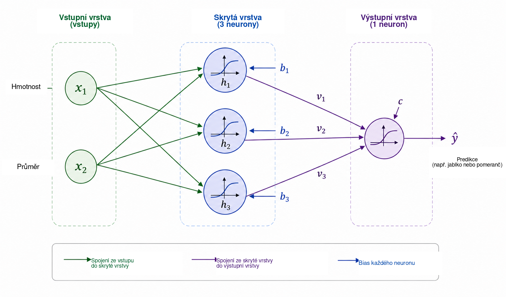
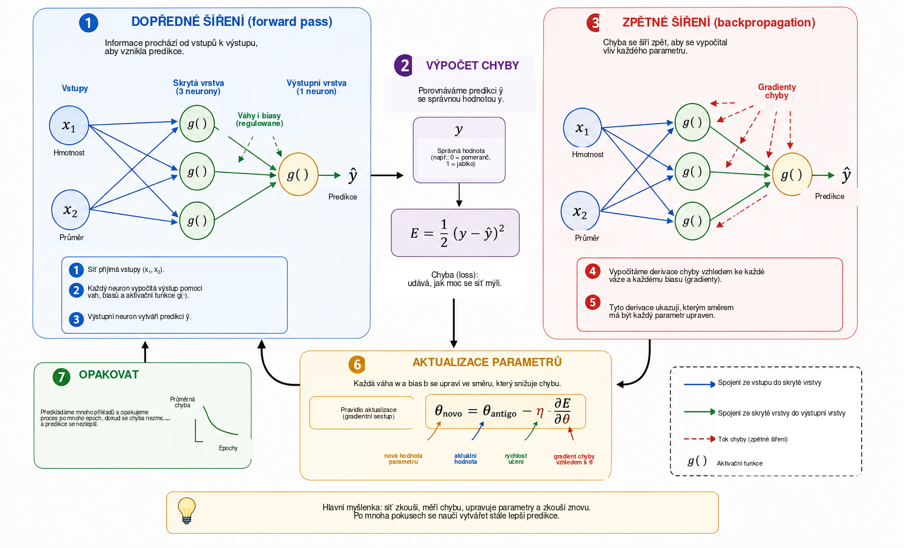
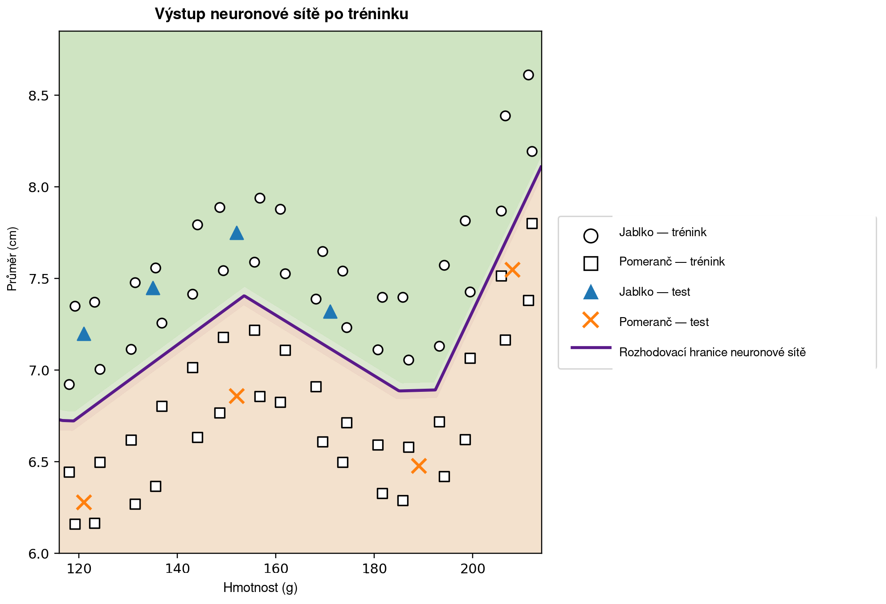

Kdy se může počítač učit?
V každodenním životě téměř bezděčně činíme klasifikační rozhodnutí. Když se podíváme na ovoce, rychle rozpoznáme, zda jde o jablko nebo pomeranč; když nám přijde zpráva do telefonu, odlišujeme běžnou komunikaci od nevyžádané reklamy; v lékařské analýze lze několik měření kombinovat jako podporu rozhodnutí; a ve finančních institucích se před poskytnutím úvěru vyhodnocuje mnoho informací. Ve všech těchto příkladech se současně posuzuje několik vlastností, aby bylo možné získat odpověď.
V mnoha tradičních počítačových programech jsou pravidla vedoucí k takové odpovědi explicitně zapsána programátorem. Tento přístup funguje dobře, pokud jsou pravidla známá a lze je jasně formulovat. Je však méně účinný, jsou-li data velmi rozmanitá nebo je-li obtížné předem stanovit všechny podmínky potřebné pro dobré rozhodnutí. To vede k přirozené otázce:
Můžeme vytvořit program, který se rozhodovací pravidlo naučí z příkladů, místo aby toto pravidlo dostal předem?
Jde o jednu z ústředních myšlenek strojového učení, oblasti umělé inteligence zabývající se metodami přizpůsobování modelů datům . V úloze učení s učitelem dostává algoritmus příklady spolu se správnými odpověďmi a naším cílem je nalézt model, který dokáže vytvářet užitečné predikce také pro případy nepoužité při tréninku. Mezi mnoha modely vyvinutými pro tento účel získaly zvláštní význam umělé neuronové sítě, používané mimo jiné při rozpoznávání obrazu, zpracování jazyka, analýze signálů a předpovídání časových řad .
Využití neuronových sítí jako mostu mezi matematikou, výpočty a školním vzděláváním již v časopise Professor de Matemática Online diskutovali Batista a Martins , kteří představili aktivitu spojenou se vzděláváním učitelů, Pythonem a rozpoznáváním číslic. Tento článek volí doplňující pohled. Naším hlavním cílem je odhalit matematiku uvnitř malé neuronové sítě, počínaje analytickou geometrií a následně krok za krokem přecházet k výpočtu gradientu a ruční implementaci zpětného šíření.
Navzdory propracovanosti současných aplikací lze matematické jádro neuronové sítě zavést pomocí poměrně dobře známých pojmů. Na základní úrovni je neuronová síť složením funkcí, jejichž parametry se nastavují na základě dat. Začínáme jednoduchým geometrickým problémem, reinterpretujeme oddělující přímku jako umělý neuron, spojíme několik neuronů, analyzujeme úlohu aktivačních funkcí a ukážeme, jak lze derivace použít k automatickému nastavování parametrů sítě. Poté implementujeme úplný malý příklad v Pythonu a zachováme přímou souvislost mezi rovnicemi a kódem.
Matematická reprezentace problému
Abychom pochopili fungování neuronové sítě, začneme záměrně zjednodušeným problémem: rozlišováním jablek a pomerančů. Ovoce má mnoho vlastností, které by mohly být pro tuto úlohu užitečné, například barvu, hmotnost, průměr, texturu nebo vůni. Počáteční matematický model však nemusí zahrnovat celou tuto složitost. Použijeme pouze dvě snadno měřitelné veličiny: hmotnost v gramech a průměr v centimetrech.
Každý plod tedy budeme reprezentovat uspořádanou dvojicí \[(x_1,x_2),\] kde \[x_1=\text{hmotnost} \qquad\text{a}\qquad x_2=\text{průměr}.\]
Dvojice \((155,\;7.2)\) tedy představuje plod o hmotnosti \(155\) g a průměru \(7.2\) cm. Nahrazením fyzického objektu dvěma číselnými měřeními přiřadíme každému plodu bod v kartézské rovině: první souřadnice označuje hmotnost a druhá průměr. Obrázek 1 tuto reprezentaci ilustruje pro hypotetickou množinu jablek a pomerančů.

Tato transformace mění způsob, jakým na problém nahlížíme. Místo přímé otázky, jak rozpoznat jablko nebo pomeranč, můžeme položit geometrickou otázku: jak v rovině oddělit body náležející dvěma třídám? Taková změna pohledu má ve strojovém učení zásadní význam. Obrazy, texty, zvuky a experimentální signály musí být převedeny na numerické reprezentace, než je algoritmus může zpracovat. V našem příkladu má každý objekt pouze dvě souřadnice; v reálných aplikacích může reprezentace obsahovat stovky, tisíce nebo dokonce miliony složek. Princip zůstává stejný: každý příklad je spojen se souborem čísel a model hledá pravidlo, které tuto reprezentaci mapuje na požadovanou odpověď.
Začneme nejjednodušším dostupným geometrickým pravidlem a zeptáme se, zda jediná přímka dokáže dostatečně dobře oddělit body odpovídající jablkům od bodů odpovídajících pomerančům.
Přímka jako klasifikátor
Jakmile každý plod zobrazíme jako bod v kartézské rovině, stává se klasifikace geometrickým problémem: může přímka oddělit jablka od pomerančů? Tato otázka obsahuje základní myšlenku důležité rodiny metod strojového učení nazývaných lineární klasifikátory.
Uvažujme přímku protínající oblak dat, jak ukazuje Obrázek 2. Přímka rozděluje rovinu na dvě poloroviny. Pokud většina bodů odpovídajících jablkům leží na jedné straně a většina bodů odpovídajících pomerančům na druhé, může poloha nového plodu vzhledem k přímce sloužit jako klasifikační pravidlo. Po změření jeho hmotnosti a průměru reprezentujeme plod jako bod a určíme, na které straně přímky tento bod leží.

V kartézské rovině \((x_1,x_2)\) lze přímku popsat rovnicí \[w_1x_1+w_2x_2+b=0, \qquad (w_1,w_2)\neq(0,0).\]
Vektor \((w_1,w_2)\) je kolmý k přímce, a proto určuje její orientaci, zatímco parametr \(b\) ovlivňuje její polohu. Tato reprezentace má malou redundanci: současné vynásobení \(w_1\), \(w_2\) a \(b\) stejnou nenulovou konstantou dává přesně tutéž přímku. Parametry popisující hranici tedy nejsou jednoznačné. Jejich číselná interpretace závisí také na měřítku proměnných. Protože hmotnost měříme v gramech a průměr v centimetrech, neměli bychom číselné hodnoty \(w_1\) a \(w_2\) přímo porovnávat bez zohlednění odlišných jednotek.
Samotná rovnice přímky poskytuje jednoduchý způsob, jak určit, na které straně hranice bod leží. Definujme skóre \[s(x_1,x_2)=w_1x_1+w_2x_2+b.\]
Je-li \(s(x_1,x_2)=0\), bod leží na přímce. Když \(s(x_1,x_2)>0\), nachází se v jedné polorovině; když \(s(x_1,x_2)<0\), v druhé. Přijmeme-li konvenci, že kladné hodnoty odpovídají jablkům a záporné pomerančům, pravidlo má tvar \[\begin{cases} s(x_1,x_2)\geq 0 & \Longrightarrow \text{jablko},\\ s(x_1,x_2)<0 & \Longrightarrow \text{pomeranč}. \end{cases}\]
Uvažujme například hranici danou \[w_1=\frac{1}{10}, \qquad w_2=2, \qquad b=-30.\] Pro plod o hmotnosti \(160\) g a průměru \(7.8\) cm, \[\begin{aligned} s &=\frac{1}{10}\times160+2\times7.8-30\\ &=16+15.6-30\\ &=1.6. \end{aligned}\] Protože je skóre kladné, bod se nachází v polorovině, kterou jsme spojili s jablky. Klasifikátor by tedy tomuto plodu přiřadil štítek jablka.
Ne každá volba \(w_1\), \(w_2\) a \(b\) vede k dobré klasifikaci. Některé přímky oddělují obě skupiny špatně, zatímco jiné vedou k menšímu počtu chyb. Úloha učení spočívá právě ve využití předem označených příkladů k určení hodnot parametrů, které zmenšují míru chyby modelu. Místo přímého naprogramování polohy přímky chceme, aby algoritmus její koeficienty nastavil z dat.
Jediná přímka může fungovat dobře, jsou-li třídy přibližně lineárně separovatelné. Složitější datové soubory mohou vyžadovat nelineární hranici. Než se tímto omezením budeme zabývat, interpretujeme vytvořený klasifikátor jako základní výpočetní jednotku: umělý neuron.
Umělý neuron
V předchozí části výraz \[s=w_1x_1+w_2x_2+b\] sloužil k určení, na které straně přímky se plod nachází. Tentýž výraz lze chápat jako první fázi výpočtu prováděného umělým neuronem. Neuron přijímá číselné vstupy, kombinuje je pomocí vah a biasu a poté použije matematickou funkci, aby získal výstup.
V našem příkladu jsou vstupy hmotnost \(x_1\) a průměr \(x_2\). Každý vstup se násobí parametrem nazývaným váha; součiny se sčítají s konstantním členem \(b\), nazývaným bias. Obrázek 3 schematicky znázorňuje tento výpočet.

Váhy určují, jak změny vstupů ovlivňují skóre. Jsou-li \(x_2\) a všechny ostatní veličiny konstantní, změní změna \(\Delta x_1\) hodnotu \(s\) o \(w_1\Delta x_1\). Analogicky změna \(\Delta x_2\) změní skóre o \(w_2\Delta x_2\). Důležité je také znaménko: kladná váha způsobí, že růst vstupu zvyšuje skóre, zatímco záporná váha má opačný účinek. Tuto interpretaci je třeba používat opatrně, mají-li proměnné různé jednotky a měřítka. Proto se v praktických implementacích vstupní data před tréninkem často normalizují nebo standardizují.
Bias \(b\) je konstantní člen afinní transformace. Geometricky umožňuje posouvat rozhodovací hranici. Když \(b=0\), rovnice \[w_1x_1+w_2x_2=0\] nutí přímku procházet počátkem souřadnic. Přítomnost biasu umožňuje hranici posunout jinam. Ekvivalentně, když \(x_1=x_2=0\), je skóre jednoduše \(s=b\).
Skóre nemusí být konečným výstupem neuronu. Obecně se na ně aplikuje aktivační funkce \(g\): \[\widehat{y}=g(s)=g\left(w_1x_1+w_2x_2+b\right).\] Výpočet má tedy dvě fáze, \[\begin{aligned} s &= w_1x_1+w_2x_2+b,\\[4pt] \widehat{y} &= g(s). \end{aligned}\]
Pro hodnoty parametrů z předchozí části dostáváme \(s=1.6\). Zvolíme-li skokovou funkci \[g(s)= \begin{cases} 1, & s\geq0,\\ 0, & s<0, \end{cases}\] pak \(\widehat{y}=g(1.6)=1\). Podle přijaté konvence je plod klasifikován jako jablko. Při takové aktivaci se rozhodnutí mění, když \(s\) prochází nulou, takže hranice tříd je přesně dána \[w_1x_1+w_2x_2+b=0.\]
Jediný neuron je tedy jednoduchý matematický objekt s nastavitelnými parametry. Jeho skutečný význam se projeví při spojení mnoha takových jednotek. Než však síť sestavíme, musíme pochopit, proč je aktivační funkce tak důležitá.
Proč potřebujeme aktivační funkci?
Neuron nejprve vypočítá skóre pomocí afinní transformace a teprve poté použije aktivační funkci. Tento druhý krok je nezbytný, má-li neuronová síť reprezentovat složité závislosti. Abychom viděli proč, představme si síť bez aktivačních funkcí. Každá jednotka by pak měla tvar \[y=w_1x_1+w_2x_2+b.\]
Pro jednorozměrnou ilustraci předpokládejme, že první jednotka určuje \[h=ax+b\] a druhá počítá \[y=ch+d.\] Po dosazení dostáváme \[y=c(ax+b)+d=acx+(cb+d),\] což je stále afinní funkce proměnné \(x\). Totéž platí ve více rozměrech: složení afinních transformací zůstává afinní. Přidávání mnoha vrstev bez nelineární operace tedy zásadně nezvyšuje reprezentační schopnost sítě; celé složení by bylo možné nahradit jedinou afinní transformací.
Aktivační funkce toto omezení překonává. Po výpočtu skóre \(s\) neuron obvykle použije nelineární zobrazení \[h=g(s).\] Když spojíme několik takových jednotek, výsledné složení už nelze redukovat na jedinou afinní transformaci. Díky tomu může síť vytvářet složitější rozhodovací hranice.
Nejjednodušší aktivační funkcí je skoková funkce, \[g(s)= \begin{cases} 1, & s\geq0,\\ 0, & s<0. \end{cases}\] Poskytuje binární rozhodnutí a je velmi užitečná pro pochopení klasifikace. Její derivace je však rovna nule pro \(s\neq0\) a v \(s=0\) neexistuje. Protože gradientní učení využívá derivace k určení, jak se mají parametry měnit, není skoková funkce pro takový mechanismus tréninku vhodná.
Jednou z alternativ je sigmoidní funkce, \[\sigma(s)=\frac{1}{1+e^{-s}}.\] Zobrazuje každé reálné číslo na hodnotu striktně mezi \(0\) a \(1\). Pro velmi záporné \(s\) se výstup blíží \(0\); pro velmi kladné \(s\) se blíží \(1\); mezi těmito krajními hodnotami je přechod plynulý. Sigmoidní funkce je všude derivovatelná a platí \[\sigma'(s)=\sigma(s)\bigl(1-\sigma(s)\bigr).\] Protože její hodnoty leží mezi \(0\) a \(1\), často se používá ve výstupní vrstvě binárního klasifikátoru. V pravděpodobnostním pojetí lze při vhodné ztrátové funkci výstup interpretovat jako odhad pravděpodobnosti třídy označené hodnotou \(1\). Ve skrytých vrstvách však může sigmoid způsobovat obtíže: pro vstupy s velkou absolutní hodnotou se jeho derivace stává velmi malou, což přispívá k problému mizejícího gradientu v hlubokých sítích.
Běžně používanou aktivační funkcí ve skrytých vrstvách je ReLU (Rectified Linear Unit), \[\mathrm{ReLU}(s)=\mathrm{max}(0,s) = \begin{cases} 0, & s<0,\\ s, & s\geq0. \end{cases}\] Ačkoli se skládá ze dvou lineárních úseků, ReLU není globálně lineární. Její derivace je rovna \(0\) pro \(s<0\) a \(1\) pro \(s>0\). V bodě \(s=0\) běžná derivace neexistuje, proto programové implementace volí určitou konvenci pro gradient. Pro kladné vstupy derivace s růstem \(s\) neklesá, což pomáhá vyhnout se jednomu z mechanismů saturace sigmoidní funkce.
Obrázek 4 vizuálně porovnává tyto tři aktivační funkce: prudký skok skokové funkce, plynulý přechod sigmoidy a změnu sklonu ReLU.

Jejich nejdůležitější vlastnosti jsou shrnuty níže.
| Funkce | Výstup | Derivace | Typické použití |
|---|---|---|---|
| Skoková | \(\{0,1\}\) | Nula pro \(s\neq0\); nedefinovaná v \(s=0\) | Historické modely a didaktické příklady |
| Sigmoidní | \((0,1)\) | Existuje pro každé \(s\) | Výstupní vrstva v binární klasifikaci |
| ReLU | \([0,\infty)\) | \(0\) pro \(s<0\) a \(1\) pro \(s>0\) | Skryté vrstvy |
Detaily těchto funkcí se liší, jejich společnou pojmovou úlohou je však zavedení nelinearity. Právě nelinearita umožňuje malé síti v následující části reprezentovat vztahy, které jediná přímka zachytit nedokáže.
Čtenářům, kteří chtějí téma dále prohloubit, nabízí Haykin klasický výklad neuronových sítí, zatímco Goodfellow, Bengio a Courville diskutují aktivační funkce a trénink hlubokých sítí v širším kontextu. Volně dostupný text Nielsena je zvláště přístupný při budování intuice o neuronech, aktivacích a učení.
Stavba malé neuronové sítě
Uvažujme nyní síť se dvěma vstupy, jednou skrytou vrstvou obsahující tři neurony a jedním výstupním neuronem. Vstupy zůstávají následující: \[x_1=\text{hmotnost}, \qquad x_2=\text{průměr},\] a oba jsou přivedeny do každého skrytého neuronu, jak ukazuje Obrázek 5.

Nechť jsou výstupy skryté vrstvy \(h_1\), \(h_2\) a \(h_3\). Každý neuron dostává stejné dva vstupy, ale má vlastní váhy a bias: \[\begin{aligned} h_1&=g\left(w_{11}x_1+w_{12}x_2+b_1\right),\\[4pt] h_2&=g\left(w_{21}x_1+w_{22}x_2+b_2\right),\\[4pt] h_3&=g\left(w_{31}x_1+w_{32}x_2+b_3\right). \end{aligned}\]
Ačkoli všechny tři neurony dostávají stejnou hmotnost a průměr, mohou dávat různé odpovědi, protože jejich parametry jsou odlišné. Během tréninku se tyto parametry nastavují tak, aby mezilehlé aktivace byly užitečné pro klasifikaci.
Tři veličiny \(h_1\), \(h_2\) a \(h_3\) jsou následně předány výstupnímu neuronu, který vypočítá \[s_{\mathrm{out}}=v_1h_1+v_2h_2+v_3h_3+c\] a vytvoří \[\widehat{y}=g_{\mathrm{out}}\left(s_{\mathrm{out}}\right).\] Pro náš binární problém používáme sigmoidní výstup: \[\widehat{y}=\sigma\left(v_1h_1+v_2h_2+v_3h_3+c\right), \qquad 0<\widehat{y}<1.\]
Přiřadíme-li \(y=1\) jablku a \(y=0\) pomeranči, vede práh \(0.5\) ke klasifikačnímu rozhodnutí \[\widehat{y}\geq0.5 \Longrightarrow \text{jablko}, \qquad \widehat{y}<0.5 \Longrightarrow \text{pomeranč}.\] Hodnoty blízké \(1\) jsou tedy silně spojeny s jablky, zatímco hodnoty blízké \(0\) s pomeranči. Jak jsme již uvedli, číselná interpretace \(\widehat{y}\) jako pravděpodobnosti vyžaduje další předpoklady o modelu a jeho tréninku. Pro zde používané klasifikační pravidlo stačí chápat \(\widehat{y}\) jako spojitý výstup sítě.
Klíčovou vlastností této architektury je mezilehlá reprezentace \[(x_1,x_2) \longrightarrow (h_1,h_2,h_3) \longrightarrow \widehat{y}.\] Síť přijímá dvě vlastnosti a před vytvořením konečné odpovědi konstruuje tři nové veličiny. Tyto aktivace nejsou voleny ručně: závisí na vahách a biasech, a proto se během tréninku parametrů mění.
Navzdory malé velikosti má síť již třináct nastavitelných parametrů. Tři skryté neurony obsahují \[3(2+1)=9\] parametrů a výstupní neuron přidává \[3+1=4.\] Zatem \[9+4=13.\]
Stejné počítání je přehledné v maticovém zápisu. Definujme \[\mathbf{x}= \begin{bmatrix} x_1\\x_2 \end{bmatrix}, \qquad W^{(1)}= \begin{bmatrix} w_{11}&w_{12}\\ w_{21}&w_{22}\\ w_{31}&w_{32} \end{bmatrix}, \qquad \mathbf{b}^{(1)}= \begin{bmatrix} b_1\\b_2\\b_3 \end{bmatrix}.\] Pak lze skrytou vrstvu stručně zapsat jako \[\mathbf{h}=g\left(W^{(1)}\mathbf{x}+\mathbf{b}^{(1)}\right),\] kde \(g\) působí po složkách. Pro výstup platí \[\widehat{y} = \sigma\left(W^{(2)}\mathbf{h}+b^{(2)}\right),\] kde \[W^{(2)}= \begin{bmatrix} v_1&v_2&v_3 \end{bmatrix}.\]
Tento zápis předznamenává strukturu, která se objeví v programu v Pythonu. Když plod přivedeme na vstup a postupně počítáme aktivace až k \(\widehat{y}\), provádíme dopředné šíření (angl. forward pass). Zůstává klíčová otázka: jak automaticky určit třináct parametrů tak, aby predikce odpovídaly datům?
Jak se neuronová síť učí?
Váhy a biasy nejsou předem známy. Musí být nastaveny pomocí příkladů, pro které známe správnou odpověď. Tento proces se nazývá trénink a lze jej shrnout cyklem \[\boxed{\text{predikce}} \longrightarrow \boxed{\text{měření chyby}} \longrightarrow \boxed{\text{aktualizace parametrů}} \longrightarrow \boxed{\text{opakování}}.\]
Uvažujme plod o hmotnosti \(140\) g a průměru \(7.0\) cm, jehož správnou třídou je pomeranč, tedy \(y=0\). Předpokládejme, že v určitém okamžiku tréninku síť dává výstup \(\widehat{y}=0.80\). Jednoduchou mírou rozdílu mezi predikcí a cílovou hodnotou je kvadratická chyba \[E=\frac{1}{2}\left(y-\widehat{y}\right)^2.\] V tomto příkladu \[E=\frac{1}{2}(0-0.80)^2=0.32.\]
Tento výraz je ztrátovou funkcí pro jeden příklad. Protože jde o druhou mocninu, platí \(E\geq0\) a predikce vzdálenější od cílové hodnoty dostávají větší penalizaci. Faktor \(1/2\) nemění polohu minima, ale zjednodušuje derivace. V binární klasifikaci se často používají jiné ztrátové funkce, zejména křížová entropie. Zde používáme kvadratickou chybu, protože její algebra je přehledná a postačuje k zavedení optimalizace a zpětného šíření .
Obsahuje-li trénovací množina \(N\) příkladů, jednou z globálních měr je průměrná ztráta \[J=\frac{1}{N}\sum_{i=1}^{N}E_i.\] Každá predikce závisí na vahách a biasech sítě, proto \(J\) závisí také na všech těchto parametrech. Trénink znamená hledání takových hodnot parametrů, pro které je \(J\) malé.
Abychom pochopili mechanismus nastavování, představme si nejprve, že všechny parametry kromě jedné váhy \(w\) jsou pevné. Ztrátu pak můžeme chápat jako funkci \(J=J(w)\). Obrázek 6 shrnuje základní kroky tréninku, které nyní probereme.

Pro čtenáře s menší zkušeností s diferenciálním počtem lze derivaci interpretovat jako míru lokální citlivosti: říká, jak malá změna jednoho parametru ovlivní ztrátu. Její znaménko ukazuje směr, ve kterém funkce lokálně roste nebo klesá, a absolutní hodnota měří sílu této lokální změny.
Derivace \[\frac{\partial J}{\partial w}\] určuje lokální sklon. Je-li kladná, malý růst \(w\) obvykle způsobí růst \(J\), proto je třeba váhu posunout opačným směrem. Je-li záporná, zvětšení \(w\) lokálně snižuje \(J\). Oba případy popisuje rovnice \[w_{\mathrm{new}} = w_{\mathrm{old}} - \eta\frac{\partial J}{\partial w},\] která vyjadřuje základní myšlenku gradientního sestupu. Kladné číslo \(\eta\) je rychlost učení; řídí délku kroku. Velmi malá hodnota může trénink zpomalit, zatímco příliš velká může vést k oscilacím nebo nestabilitě.
Pro síť s mnoha parametry nechť \(\theta\) označuje libovolnou váhu nebo bias. Aktualizace má tvar \[\theta_{\mathrm{new}} = \theta_{\mathrm{old}} - \eta\frac{\partial J}{\partial\theta}.\] Soubor všech parciálních derivací tvoří gradient ztrátové funkce. Geometricky gradient ukazuje směr nejrychlejšího lokálního růstu, takže jeho opačný směr určuje lokální směr poklesu.
Zbývá tyto derivace vypočítat, když je síť složením mnoha funkcí. Při dopředném šíření informace prochází jako \[\text{vstupy} \longrightarrow \text{skrytá vrstva} \longrightarrow \text{výstup}.\] Abychom určili, jak parametr v dřívější vrstvě ovlivňuje ztrátu, matematicky sledujeme řetězec závislostí v opačném směru. Tento postup se nazývá zpětné šíření (angl. backpropagation). Jde v podstatě o systematické a efektivní použití řetězového pravidla. Rumelhart, Hinton a Williams představují klasický zdroj k rozšíření tohoto postupu v sítích se skrytými vrstvami; Nielsen nabízí podrobné a zvláště didaktické odvození.
Pro jednoduchý řetězec závislostí, v němž \(E\) závisí na \(\widehat{y}\), tato veličina závisí na aktivaci \(h\) a \(h\) zase na váze \(w\), dává řetězové pravidlo \[\frac{\partial E}{\partial w} = \frac{\partial E}{\partial\widehat{y}} \, \frac{\partial\widehat{y}}{\partial h} \, \frac{\partial h}{\partial w}.\] Každý faktor popisuje jednu fázi vlivu \(w\) na konečnou ztrátu. Větší sítě obsahují mnoho takových řetězců a zpětné šíření organizuje výpočty tak, aby bylo možné mezilehlé derivace znovu použít namísto jejich samostatného výpočtu pro každý parametr.
V praxi trénink využívá mnoho příkladů. Jeden úplný průchod trénovací množinou se nazývá epocha. Parametry lze aktualizovat po každém příkladu, jako v didaktickém programu použitém dále v článku, nebo po malých skupinách příkladů nazývaných mini-batche, což je typické pro větší sítě. V obou případech se cyklus predikce, ztráty, gradientů a aktualizací opakuje po mnoho epoch.
Konkrétním způsobem vizualizace tohoto vývoje je sledovat predikci pro jeden pevný příklad v různých fázích tréninku. Uvažujme znovu plod o hmotnosti \(140\) g a průměru \(7.0\) cm, jehož správnou třídou je pomeranč. Tabulka 1 ukazuje hypotetický průběh. Tyto hodnoty nepocházejí z konkrétního běhu programu; slouží pouze k ilustraci mechanismu.
| Epocha | Predikce \(\widehat{y}\) | Ztráta \(E\) | Klasifikace |
|---|---|---|---|
| 1 | 0.86 | 0.37 | Jablko |
| 5 | 0.71 | 0.25 | Jablko |
| 10 | 0.55 | 0.15 | Jablko |
| 20 | 0.31 | 0.05 | Pomeranč |
| 40 | 0.09 | 0.004 | Pomeranč |
Na začátku je výstup blízko \(1\) a plod je chybně klasifikován jako jablko. Jak se parametry nastavují, predikce klesá a nakonec překročí práh \(0.5\), což vede ke správné třídě. Během tohoto procesu se mění číselné hodnoty vah a biasů; architektura sítě zůstává nezměněna.
Snížení ztráty na trénovacích datech není konečným cílem. Užitečná síť by měla dobře predikovat také příklady, které nebyly použity k nastavení parametrů. Tato schopnost se nazývá generalizace. Když se model příliš přizpůsobí zvláštnostem trénovací množiny a na nových datech funguje hůře, mluvíme o přeučení (angl. overfitting). Při pečlivějším hodnocení se data obvykle dělí na trénovací, validační a testovací množinu: první slouží k nastavení parametrů, druhá podporuje volby při vývoji modelu a třetí se ponechává pro závěrečné hodnocení. Širší diskusi generalizace a hodnocení modelů lze nalézt u Faceliho a kol. a u Goodfellowa, Bengia a Courvilla .
Došli jsme tedy k matematickému významu učení v neuronové síti. V tomto kontextu znamená učení nastavování parametrů složené funkce tak, aby se snižovala míra chyby na datech a v ideálním případě aby model generalizoval na nové příklady. Síť vytvoří predikci, vypočítá ztrátu, pomocí derivací určí vliv parametrů na tuto ztrátu a provede posloupnost malých úprav.
Od matematiky k Pythonu
Nyní přecházíme od rovnic ke spustitelnému programu. Cílem není použít specializovanou knihovnu neuronových sítí, ale přímo pomocí NumPy implementovat matematické operace rozvíjené v celém článku . Díky tomu můžeme řádek po řádku vidět, jak se v kódu objevují lineární kombinace, aktivační funkce, výpočet ztráty, zpětné šíření a gradientní sestup.
V přesvědčivějším závěrečném příkladu používáme syntetický datový soubor rozprostřený ve větší oblasti roviny hmotnost–průměr. Stále pracujeme pouze se dvěma fyzikálními vlastnostmi — hmotností v gramech a průměrem v centimetrech — tentokrát však rozmístíme \(64\) trénovacích příkladů po rozsáhlé oblasti roviny a dalších osm příkladů vyhradíme pro ilustrační test. Data zůstávají syntetická a leží v realistických rozsazích pro jablka a pomeranče. Byla vytvořena tak, aby vedla k nelineární rozhodovací hranici, aniž by byly všechny body soustředěny do několika příliš umělých shluků.
Geometrická myšlenka je jednoduchá. V rovině hmotnost–průměr definujeme referenční křivku, jablka umístíme do dvou pásů nad touto křivkou a pomeranče do dvou pásů pod ní. K hmotnosti a průměru přidáme malé deterministické perturbace, takže pozorování zabírají širší oblast. Výsledný příklad je bohatší než předchozí ilustrace: obsahuje více bodů, data jsou rozložena po celé oblasti a vhodná rozhodovací hranice je zřetelně zakřivenější než přímka.
V tomto závěrečném výpočetním experimentu zvětšíme skrytou vrstvu na dvanáct neuronů ReLU. Pojmová struktura analyzovaná v předchozích částech se tím nemění; pouze se zvyšuje schopnost sítě reprezentovat složitější hranici. Namísto \(13\) parametrů didaktické sítě se třemi neurony máme nyní \(49\) nastavitelných parametrů: \(24\) vah a \(12\) biasů v první vrstvě, poté \(12\) vah a jeden bias ve výstupní vrstvě. Rovnice mají přesně stejný tvar; větší jsou pouze vektory a matice.
Úplný program je uveden níže.
import numpy as np
import matplotlib.pyplot as plt
from matplotlib.lines import Line2D
def relu(s):
return np.maximum(0, s)
def relu_derivative(s):
return (s > 0).astype(float)
def sigmoid(s):
return 1 / (1 + np.exp(-s))
def base_boundary(m):
return 6.68 + 0.74*np.exp(-((m-155)/20)**2) \
+ 1.50/(1 + np.exp(-(m-202)/5))
def build_data():
masses_1 = np.linspace(118, 212, 16)
masses_2 = masses_1 + np.array([
1.2,-1.1,0.8,-1.3,1.0,-0.8,1.1,-1.0,
1.3,-0.9,0.9,-1.2,1.0,-1.0,0.8,-0.7
])
k = np.arange(16)
a1 = np.column_stack([
masses_1,
base_boundary(masses_1) + 0.22 + 0.05*np.sin(0.8*k)
])
a2 = np.column_stack([
masses_2,
base_boundary(masses_2) + 0.58 + 0.06*np.cos(0.45*k)
])
o1 = np.column_stack([
masses_1,
base_boundary(masses_1) - (0.22 + 0.04*np.cos(0.7*k))
])
o2 = np.column_stack([
masses_2,
base_boundary(masses_2) - (0.55 + 0.05*np.sin(0.5*k))
])
X_train = np.vstack([a1, a2, o1, o2])
y_train = np.array([1.0]*32 + [0.0]*32)
X_test = np.array([
[121.0, 7.20], [135.0, 7.45],
[152.0, 7.75], [171.0, 7.32],
[121.0, 6.28], [152.0, 6.86],
[189.0, 6.48], [208.0, 7.55]
])
y_test = np.array([1,1,1,1,0,0,0,0], dtype=float)
return X_train, y_train, X_test, y_test
def predict(X, mean, std, W1, b1, W2, b2):
Xn = (X - mean) / std
outputs = []
for x in Xn:
h = relu(W1 @ x + b1)
y_hat = sigmoid(W2 @ h + b2)
outputs.append(y_hat)
return np.array(outputs)
X_train, y_train, X_test, y_test = build_data()
mean = X_train.mean(axis=0)
std = X_train.std(axis=0)
Xn = (X_train - mean) / std
rng = np.random.default_rng(42)
W1 = 0.1 * rng.standard_normal((12, 2))
b1 = np.zeros(12)
W2 = 0.1 * rng.standard_normal(12)
b2 = 0.0
eta = 0.05
n_epochs = 6000
history = []
for epoch in range(n_epochs):
for i in rng.permutation(len(Xn)):
x = Xn[i]
target = y_train[i]
z1 = W1 @ x + b1
h = relu(z1)
z2 = W2 @ h + b2
y_hat = sigmoid(z2)
delta2 = (y_hat - target) * y_hat * (1 - y_hat)
dW2 = delta2 * h
db2 = delta2
delta1 = (delta2 * W2) * relu_derivative(z1)
dW1 = np.outer(delta1, x)
db1 = delta1
W1 -= eta * dW1
b1 -= eta * db1
W2 -= eta * dW2
b2 -= eta * db2
errors = []
for x, target in zip(Xn, y_train):
h = relu(W1 @ x + b1)
y_hat = sigmoid(W2 @ h + b2)
errors.append(0.5 * (target - y_hat)**2)
history.append(np.mean(errors))
def make_figure():
masses = np.linspace(116, 214, 500)
diameters = np.linspace(6.0, 8.85, 500)
M, D = np.meshgrid(masses, diameters)
grid = np.column_stack([M.ravel(), D.ravel()])
P = predict(grid, mean, std, W1, b1, W2, b2).reshape(M.shape)
fig, ax = plt.subplots(figsize=(9.2, 6.3))
ax.contourf(
M, D, P,
levels=[0.0, 0.25, 0.50, 0.75, 1.0],
colors=["#f3e0cb", "#ecd5c4", "#dbe7cf", "#cde3bf"],
alpha=0.95
)
ax.contour(M, D, P, levels=[0.5],
colors=["#5a1a8a"], linewidths=2.2)
mask = y_train == 1.0
ax.scatter(X_train[mask,0], X_train[mask,1], marker="o",
s=48, facecolors="white", edgecolors="black",
linewidths=1.1, label="Jablko - trénink")
mask = y_train == 0.0
ax.scatter(X_train[mask,0], X_train[mask,1], marker="s",
s=48, facecolors="white", edgecolors="black",
linewidths=1.1, label="Pomeranč - trénink")
mask = y_test == 1.0
ax.scatter(X_test[mask,0], X_test[mask,1], marker="^",
s=92, color="#1f77b4", label="Jablko - test")
mask = y_test == 0.0
ax.scatter(X_test[mask,0], X_test[mask,1], marker="x",
s=110, color="#ff7f0e", linewidths=2.0,
label="Pomeranč - test")
ax.set_xlabel("Hmotnost (g)")
ax.set_ylabel("Průměr (cm)")
ax.set_title("Výstup neuronové sítě po tréninku")
handles = [
Line2D([0],[0], marker='o', markersize=9,
markerfacecolor='white', markeredgecolor='black',
linestyle='None', label='Jablko - trénink'),
Line2D([0],[0], marker='s', markersize=9,
markerfacecolor='white', markeredgecolor='black',
linestyle='None', label='Pomeranč - trénink'),
Line2D([0],[0], marker='^', markersize=9, color='#1f77b4',
linestyle='None', label='Jablko - test'),
Line2D([0],[0], marker='x', markersize=10, color='#ff7f0e',
linestyle='None', label='Pomeranč - test'),
Line2D([0],[0], color='#5a1a8a', lw=2.2,
label='Rozhodovací hranice neuronové sítě')
]
ax.legend(handles=handles, loc='center left',
bbox_to_anchor=(1.02, 0.5), frameon=True)
fig.tight_layout()
plt.show()Ačkoli je kód delší než první rovnice analyzované v článku, jeho struktura zůstává přehledná. Funkce build_data() automaticky generuje \(64\) trénovacích příkladů a osm ilustračních testovacích příkladů. Poté obě proměnné standardizujeme podle vztahu \[x_j^{\ast}=\frac{x_j-\mu_j}{\sigma_j},\] kde \(\mu_j\) a \(\sigma_j\) jsou počítány výhradně z trénovací množiny. Tím se zabrání vlivu testovací množiny na nastavení parametrů a současně se hmotnost a průměr převedou na srovnatelné číselné škály.
Dopředné šíření se ve své podstatě nemění. Jediným rozdílem je, že první vrstva nyní vytváří vektor dvanácti skrytých aktivací. V maticovém zápisu platí \[\mathbf{z}^{(1)}=W^{(1)}\mathbf{x}+\mathbf{b}^{(1)}, \qquad \mathbf{h}=\mathrm{ReLU}(\mathbf{z}^{(1)}),\] \[z^{(2)}=W^{(2)}\mathbf{h}+b^{(2)}, \qquad \widehat{y}=\sigma(z^{(2)}).\] Tyto čtyři řádky stále obsahují matematické jádro algoritmu. Trénink rovněž zachovává dříve zavedenou logiku: vypočítat predikci, změřit její chybu, pomocí derivací šířit informaci o citlivosti zpět a aktualizovat parametry malými kroky gradientního sestupu.
V kódu se zpětné šíření ve výstupní vrstvě objevuje v příkazu
delta2 = (y_hat - target) * y_hat * (1 - y_hat)a šíření do skryté vrstvy v příkazu
delta1 = (delta2 * W2) * relu_derivative(z1)po němž následuje aktualizace všech vah a biasů. Protože se příklady v každé epoše promíchávají a parametry se aktualizují po každém pozorování, je tato implementace elementární formou stochastického gradientního sestupu.
Pro zde použité semeno generátoru náhodných čísel a hyperparametry je konečná průměrná ztráta řádu \(10^{-5}\) až \(10^{-4}\) a všech \(64\) trénovacích příkladů spolu s osmi ilustračními testovacími příklady dostane očekávanou klasifikaci. To nelze interpretovat jako rigorózní statistické hodnocení kvality: data jsou syntetická a byla vytvořena pro didaktické účely. Jejich úlohou je v méně triviálním prostředí ukázat, jak se malá neuronová síť může naučit zřetelně nelineární rozhodovací hranici.
Obrázek 7 ukazuje konečný výsledek programu v rovině hmotnost–průměr. Jsou zobrazeny všechny trénovací body. Zvýrazněná křivka je vrstevnice \(\widehat{y}=0.5\) a představuje rozhodovací hranici naučenou sítí; stínované oblasti označují dvě predikované třídy. Kružnice označují trénovací jablka, čtverce trénovací pomeranče, trojúhelníky testovací jablka a křížky testovací pomeranče. Legenda je umístěna mimo hlavní oblast grafu, aby nezakrývala žádný datový bod.

Začali jsme přímkou oddělující dvě jednoduché skupiny bodů a skončili bohatším výpočetním příkladem, v němž zakřivená hranice vzniká automatickým nastavováním parametrů sítě. Do matematiky nebylo přidáno nic tajemného: implementace pouze organizuje a opakuje, ve větším měřítku a vysokou rychlostí, afinní kombinace, aktivační funkce, derivace, maticové součiny a aktualizace metodou gradientního sestupu .
Veškeré výpočetní materiály související s tímto článkem — včetně kódu a spustitelného notebooku Google Colab — jsou dostupné na adrese https://neuralmath.org, která slouží jako jednotný přístupový bod pro čtenáře, kteří chtějí příklady analyzovat, reprodukovat nebo upravovat.
Prohlášení o využití AI.
Autor používal ChatGPT, vyvinutý společností OpenAI, jako nástroj podporující redakci textu, jazykovou korekturu, organizaci výkladu a tvorbu didaktických ilustrací. Autor nese plnou odpovědnost za konečný obsah práce, včetně koncepce a zpracování matematického materiálu, kódu a použitých zdrojů.